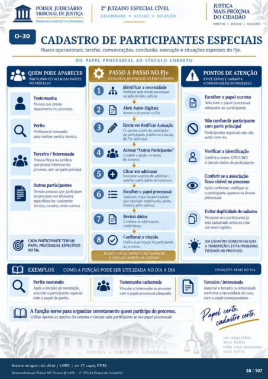

Transcrição automática em português, ainda não revisada. Confira grafia, prazos e termos jurídicos na imagem e no PDF antes de utilizar.
TRABALHO A SERVIÇO DA CIDADANIA
CELERIDADE • ACESSO • SOLUÇÃO
CADASTRO DE PARTICIPANTES ESPECIAIS
Fluxos operacionais, tarefas, comunicações. conclusão, execução e situações especiais do PJe.
DO PAPEL PROCESSUAL AO VíNCULO CORRETO
QUEM PODE APARECER
PARTICIPANTES ALÉM DAS PARTES
NO PROCESSO
Testemunha Pessoa que presta
devx)imento no processo. Profissimal norneuio
para realizar IVícia t&rica. Terceiro / Interessado
Pessoa fisica juridica que possui interesse no
prcxessa Ser parte prhcOd. Outros participantes
Demais que participam do processo em situações
esrx•cificas (ex: assistente técnico, curadM, entre
CADA PARTICIPANTE TEM UM
PAPEL PRCXESSUAL ESPECíFICO
NO PJe.
PASSO A PASSO NO PJe
o
DO ACESSO AO viNCULO DO PARTICIPANTE
Identificar a necessidade Verifique árvve ycxessual
grla decisao judicial. Abrir Autos Digitais
Acesse o processo no PJe. Entrar em Retificar
Ou a área de de participante (Ulforrne a versio
PJe utilizada). Acessar "Outrcs Participantes"
Localize a no menu do sistema.
Clicar em adicionar Selecione a opÇáo de adicionar /
asscx:iar pMticilWite Escolher o papel prcxessual
Selecit*ie 0 tipo de participante (por exernplo: testernunha 5Prito.
terceiro, entre outros) Revisar dados
Confirrne as Confirmar o vínculo
Finalize a do participante
PASSO A PASSO SIMPLES PARA GARANTIR
O ViNCULO CORRETO NO SISTEMA.
EXEMPLOS COMO A FUNÇÃO PODE SER UTILIZADA NO DIA A DIA
Perito nomeado Após a decisão de
asscxiar 0 participante esgEial com 0 de perito.
Testanunha cadastrada Vhcular a testemunha
o pagrl prt:xessual A função serve para organizar corretamente quem participa do prtxesso.
Utilize as do sistema e vincule cada participante seu processual.
DIREITO
• CII) ADA N IA
PONTOS DE ATENÇÃO
EVITE ERROS E GARANTA
A ORGANIZAÇÃO DO PROCESSO
Escolher o correto 0 papel prtxessual
adequO participante. Não confundir partici1Hnte
com prte principal Participantes esgkciais não são
autor nem réu. Verificar a identificação
Confira 0 nome, CPF/CNPJ e demais dados do participante.
Conferir se a visível no processo
confirmar, verifique se o participante aparece na árvore
Evitar duplicidade cadastro Pesquise se o participante já
está antes de criar um novo registro,
UM CADASTRO CORRETO FACILITA
A TRAMITAÇÃO E EVITA PROBLEMAS
FUTUROS NO PROCESSO.
SITUAÇOES REAIS NO PJe
Terceiro / Interessado Assxxiar o terceiro ou interessuio
conforrne a Caso. com 0 correspcndente.
cão.
UM JUDICIARIO
MAIS FORTE
PARA UMA SOCIEDADE
MAIS
Ver também o infográfico original (página 35)
